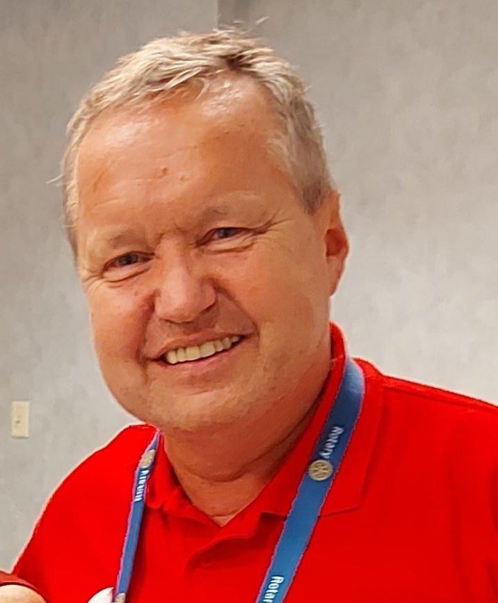
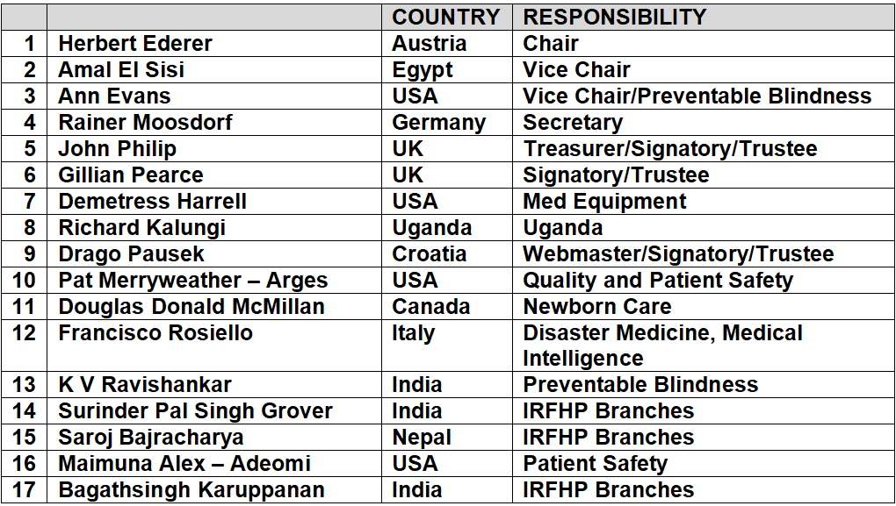

Home / About us

Dr. med. Herbert Ederer
We are fortunate to have a talented International Board of Directors. There are 17 Directors from 10 different countries. We meet once a month online.

The International Rotary Fellowship of Healthcare Professionals (IRFHP) is led by an international Board of Directors who meet monthly online. Directors are elected in accordance with the Fellowship’s Constitution and Bylaws, ensuring transparent and accountable governance.
As one of Rotary’s most active Fellowships, we maintain a vibrant programme of global activities, professional exchanges, humanitarian initiatives, and collaborative learning. We warmly encourage members to connect with us, participate in our work, and strengthen our shared impact.
If you wish to contact any member of the Board, we would be pleased to hear from you.
CONTACT: rotaryhealthprofessionals@gmail.com